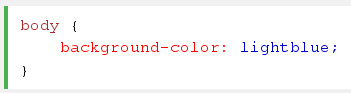

Las propiedades de fondo(en inglés background) en CSS, nos permiten controlar el color de fondo de un elemento.
Colocar una imagen de fondo, la ubicación de la misma en la pantalla (centrada, a la izquierda, en alguna coordenada de x-y, etc.)<
y la cantidad de veces que la misma se repetirá. En términos del modelo de cajas la propiedad background afecta tanto al fondo del
elemento, al relleno del mismo (padding) y a los bordes (border).
Las propiedades de background se aplican a todos los elementos
El color de fondo de Propiedad ESPECIFICA el color de fondo de las Naciones Unidas de Elemento El color de fondo de Una página se Establece Así:
La propiedad background se puede utilizar con las etiquetas <h1>, <p> y <div> entre otras.
La imagen de fondo propiedad especifica una imagen para usar como fondo de un elemento.
Por defecto, la imagen se repite de forma que cubra todo el elemento.
La imagen de fondo de una página se puede establecer la siguiente manera: